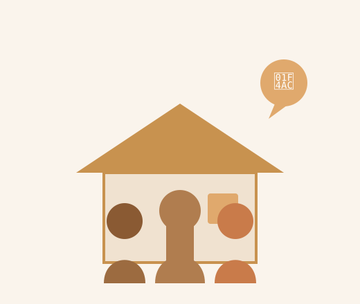

在这座城市长大，深耕装修设计近20年，帮街坊邻居把家住舒服。

我是杭州本地人，在这座城市生活了几十年。在各大装企干了快20年，从一线做到项目管理，见过太多流水线式的装修——图纸画完、工人进场、验收签字，人和人之间没有温度。
我始终觉得，装修不只是墙地顶的活儿，是帮一家人把日子过得更舒坦。杭州的老房子有杭州的脾气，本地人的生活习惯有杭州的腔调——这些东西，很多人不懂，连锁公司不懂，但我更懂。所以我带近20年积累的装修设计经验，回到最熟悉的街巷里，帮邻居们把家住好。
我不只是你的装修负责人，我是你在杭州多一个懂行的朋友。
设计师出方案/效果，项目管家保质量盯落地，我全程把关——各司其职，一个都不少。
土生土长杭州人，20年上市装企经验。
比谁都懂杭州老房的结构脾气、本地政策、邻里关系的处理门道。
每个项目从头盯到尾，工艺和材料同工同源，客户转介绍率超80%。
不只画好看的图，更画好用的家。
设计前先聊生活习惯——老一辈的起居节奏、年轻人的收纳需求、小孩的成长空间。
把每个平方米的价值榨出来。
盯工艺、盯质量、盯进度！
水电走位、防水防潮、材料进场，每个节点拍照留底。
你不用天天跑工地，我们帮你盯着。